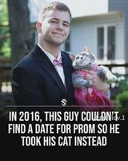
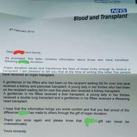

0

0

fjo3 shares a report from the Washington Post: Surging concentrations of carbon in the atmosphere, caused largely by burning fossil fuels, have produced potent changes in the way plants grow -- from increasing their sugar content to depleting essential nutrients like zinc. Experts fear the degradation of Earth's food supply will cause an epidemic of hidden hunger, in which even people who consume enough calories won't get the nutrients they need to thrive. "The diets we eat today have less nutritional density than what our grandparents ate, even if we eat exactly the same thing," said Kristie Ebi, a professor at the University of Washington's Center for Health and the Global Environment.
People in wealthy countries with strong health care systems will have many tools to cope with the change, experts said. But for the world's poorest and most vulnerable, the consequences could be devastating. One study concluded that by the middle of the century the phenomenon could put more than a billion additional women and children at risk of iron-deficiency anemia -- a condition that can cause pregnancy complications, developmental problems and even death. Meanwhile, some 2 billion people across the globe who already suffer from some form of nutrient shortage could see their health problems grow even worse. "The scale of the problem is huge," Ebi said.
Plants depend on carbon dioxide to perform photosynthesis -- but that doesn't mean they grow better when there's more carbon in the air, scientists say. A sweeping survey of changes among 32 compounds in 43 crops found that nearly every plant that humans eat is harmed by rising CO2 levels. [...] For the past several years, [Sterre F. ter Haar, an environmental scientist at Leiden University in the Netherlands and lead author of the survey] and her colleagues have worked to compile a database of all existing research on nutrient changes linked to rising CO2. They tracked down hundreds of studies, ranging from tightly controlled lab experiments to sprawling global analyses of real-world crops.
Next the team used their dataset to calculate the nutritional densities of each crop under different carbon dioxide levels -- and to predict how their composition could continue to shift in the future.
On average, they found, nutrients have already decreased by an average 3.2 percent across all plants since the late 1980s, when the concentration of carbon dioxide in the atmosphere was about 350 parts per million. That figure may seem small, ter Haar said, but with so much of the world already living on the brink of nutrient insufficiency, a drop of just a few percentage points has the potential to push millions of additional people into a health crisis. Researchers are still trying to understand the exact causes of this change. Extra CO2 can make plants grow faster and produce more carbohydrates, but without a matching increase in mineral uptake, nutrients like zinc, iron, and protein become diluted. Higher CO2 also causes plants to open their leaf pores less often, reducing the amount of water -- and dissolved minerals -- they absorb through their roots. At the same time, higher temperatures can further disrupt soil chemistry, affecting how plants take up nutrients and, in some cases, increasing their absorption of harmful substances like arsenic.
Read more of this story at Slashdot.
An anonymous reader quotes a report from CNBC: Elon Musk wrapped up his testimony on Thursday as the trial in his lawsuit against OpenAI CEO Sam Altman continued into its fourth day. OpenAI's attorney, William Savitt, cross-examined Musk in the morning. He asked Musk about the capped nature of Microsoft's investments in OpenAI, his involvement in negotiations about the company's structure, and whether he knew about the OpenAI nonprofit's recent initiatives. "I don't know what's going on at OpenAI," Musk testified.
Savitt also asked Musk about his competing artificial intelligence startup, xAI. While not the main focus of the case, Musk said it is "partly" true that xAI used some of OpenAI's models to train its own models, a process known as distilling. Musk also suggested that xAI has used OpenAI's technology to help build the company. Musk sued OpenAI, Altman, and Greg Brockman, the company's president, in 2024, alleging that they went back on their commitments to keep the artificial intelligence company a nonprofit and to follow its charitable mission. He claims that the roughly $38 million he donated to seed OpenAI, a company he co-founded, was used for unauthorized commercial purposes.
Once Musk wrapped up his testimony after roughly two hours of questioning on Thursday, his attorneys called Jared Birchall, who manages Musk's billions at his family office, as their next witness. Birchall testified about his knowledge of Musk's specific donations to OpenAI. Judge Yvonne Gonzalez Rogers oversaw the proceedings from federal court in Oakland, California. The trial will resume on Monday. Recap:
Elon Musk Says OpenAI Betrayed Him, Clashes With Company's Attorney (Day Three)
Musk Testifies OpenAI Was Created As Nonprofit To Counter Google (Day Two)
Elon Musk and OpenAI CEO Sam Altman Head To Court (Day One)
Read more of this story at Slashdot.
A new study from Harvard Medical School and Beth Israel Deaconess found that an OpenAI reasoning model outperformed experienced ER doctors at diagnosing and managing patient cases using messy, real-world emergency department records. Researchers say the results don't support replacing doctors, but they do suggest AI could meaningfully reshape clinical workflows if tested carefully in prospective trials. NPR reports: The researchers ran a series of experiments on the AI model to test its clinical acumen -- including actual cases like the lupus patient who'd been previously treated at the emergency department at Beth Israel in Boston. The team graded how well the AI model could provide an accurate diagnosis at three moments in time, from the triage stage in the ER, up to being admitted into the hospital. Overall, AI outperformed two experienced physicians -- and did so with only the electronic health records and the limited information that had been available to the physicians at the time. "This is the big conclusion for me -- it works with the messy real-world data of the emergency department, " said Dr. Adam Rodman, a clinical researcher at Beth Israel and one of the study authors. "It works for making diagnoses in the real world."
Other parts of the study focused on case reports published in the New England Journal of Medicine and clinical vignettes to suss out whether the AI model could meet well-established "benchmarks" and game out thorny diagnostic questions. "The model outperformed our very large physician baseline," said Raj Manrai, assistant professor of Biomedical Informatics at Harvard Medical School who was also part of the study. The authors emphasize the AI relied on text alone, while in real life, clinicians need to attend to many other inputs like images, sounds and nonverbal cues when diagnosing and treating a patient. The findings have been published Thursday in the journal Science.
Read more of this story at Slashdot.
French prosecutors say police detained a 15-year-old suspected of using the alias "breach3d" in connection with a cyberattack on France Titres (ANTS), the state agency that handles passports, ID cards, and other secure documents. The breach allegedly involved 12 million to 18 million lines of data offered for sale online, potentially affecting up to a third of France's population if the records are unique. The Register reports: It formally opened (PDF) a judicial investigation on April 29, covering alleged fraudulent access to a state-run automated data processing system and the extraction of data from it. Each offense carries a potential prison sentence of seven years and a maximum ~$350,000 fine. Public Prosecutor Laure Beccuau has requested that the minor, whose pronouns, like their name, were also not specified, be formally charged and placed under judicial supervision.
[...] France's approach to punishing minors via its legal system is typically geared toward re-education and rehabilitation rather than prison time. While those aged between 13 and 16 can face time in juvenile detention, it is often used as a last resort measure. The maximum sentences and fines for the charges the 15-year-old in this case faces are upper limits imposed on adult offenders, and would likely be lowered substantially in cases involving a minor, like this one.
Read more of this story at Slashdot.
Reuters reports that Charles Lieber, the former Harvard scientist convicted of lying to U.S. authorities about payments and ties to China, is now leading China's state-funded i-BRAIN lab in Shenzhen, where he has access to advanced nanofabrication tools and primate research facilities for brain-computer interface work. From the report: Charles Lieber, 67, is among the world's leading researchers in brain-computer interfaces. The technology has shown promise in treating conditions such as ALS and restoring movement in paralyzed patients. But it also has potential military applications: Scientists at China's People's Liberation Army have investigated brain interfaces as a way to engineer super soldiers by boosting mental agility and situational awareness, according to the U.S. Defense Department. Lieber was found guilty by a jury and convicted in December 2021 of making false statements to federal investigators about his ties to a Chinese state program to recruit overseas talent, and tax offenses related to payments he received from a Chinese university. He served two days in prison and six months under house arrest, and was fined $50,000 and ordered to pay $33,600 in restitution to the Internal Revenue Service. During the case, his defense said he was suffering from an incurable lymphoma, which was in remission, and he was fighting for his life.
Three years after he was sentenced, Reuters has learned that Lieber is now overseeing China's state-funded i-BRAIN, or the Institute for Brain Research, Advanced Interfaces and Neurotechnologies, with access to dedicated nanofabrication equipment and primate research infrastructure unavailable to him at Harvard. The lab is an arm of the Shenzhen Medical Academy of Research and Translation, or SMART. "I arrived on April 28, 2025 with a dream and not much more, maybe a couple bags of clothes," Lieber said of his move to China at a Shenzhen government conference in December. "Personally, my own goals are to make Shenzhen a world leader."
SMART last year appointed Lieber as an investigator, according to a post on i-BRAIN's website dated May 1, 2025. That news was covered by some media outlets. The same day, i-BRAIN said Lieber had also been appointed its founding director -- an announcement that went unreported at the time. This story is the most comprehensive account of Lieber's activities since he moved to China. Reuters is reporting for the first time that his lab has access to dedicated primate research facilities and chip-making equipment; that it sits within a sprawling ecosystem of state-backed institutions bankrolled by billions of dollars in government funding; and that it is housed within an institution that is luring top scientific talent back from the United States.
Read more of this story at Slashdot.
A new poll shows a slim majority of Swiss voters now support a June 14 referendum to cap the country's population at 10 million by 2050. Under the proposal backed by the right-wing Swiss People's Party (SVP), "the permanent resident population must not exceed 10 million before 2050, and Switzerland should abandon its freedom of movement agreement with the EU," reports Reuters. From the report: Switzerland's population is now more than 9 million, with official data showing foreign nationals accounted for more than 27% by 2024. The survey, conducted on April 22 and 23 and published in newspaper Tages-Anzeiger, showed 52% of 16,176 respondents in favor of the proposal or leaning that way, while 46% took the opposite view. The rest gave no opinion. A previous poll from early March had shown 45% backing the initiative and 47% against it, the newspaper said, flagging the latest result as unusual in that Swiss referendum proposals generally lose support as the voting day comes closer. The poll had a margin of error of plus or minus 3 percentage points.
Read more of this story at Slashdot.
Belgium plans to buy its seven aging nuclear reactors from French power giant Engie in a "full takeover" aimed at securing domestic energy supplies, extending reactor operations, and developing new nuclear capacity. "The move would also mean suspending plans to decommission nuclear operations in Belgium," reports the BBC. From the report: The move would reverse the phase-out of nuclear energy legislation approved in the early 2000s amid safety concerns prohibiting the building of new nuclear power plants and limiting the operating lifetimes of existing ones to 40 years. Only two of Belgium's seven nuclear reactors are operational - located at plants in Doel and in Tihange - and their operating licenses were recently extended until 2035. The other five reactors were shut between 2022 and 2025 and plans to dismantle them will now be suspended.
Engie and the government said they aim to reach an agreement on the takeover of the nuclear stations by October 1st. In a joint statement with Engie, the Belgian government said the move also highlights its aim to extend operations of existing nuclear reactors and to develop "new nuclear capacity" in Belgium. "By doing so, the Belgian Government is taking responsibility for Belgium's long-term energy future, with the objective of building a financially and economically viable activity that supports security of supply, climate objectives, industrial resilience and socio-economic prosperity," the statement adds.
Read more of this story at Slashdot.
The U.S. Senate unanimously passed a rule banning senators from trading on prediction markets effective immediately. CNBC reports: The move came amid rising concern about insider trading on prediction market platforms such as Kalshi and Polymarket, and about event contracts that can involve death or violence. On April 22, Kalshi said it had suspended and fined one U.S. Senate candidate and two candidates for the House of Representatives for political insider trading on their own campaigns.
Earlier on Thursday, a group of Democratic members of Congress called on the Commodity Futures Trading Commission to issue a rule "that prevents insider trading and corruption in the market and prohibits event contracts on the outcome of elections, war and military actions in the U.S. or abroad, sports, and government actions without a valid economic hedging interest." Kalshi and Polymarket both praised the Senate's action. "I applaud the Senate for passing this resolution to ban Senators and their offices from trading on prediction markets," Kalshi CEO Tarek Mansour wrote in a post on X. "Kalshi already proactively blocks members of congress and enforces against insider trading. This is a great step to increase trust in our markets by making it an industry standard," Mansour said. "Now, let's pass this in the House!"
Polymarket, in its own post on X, said, "We're in full support of this. Our Rulebook & Terms of Service already prohibit such conduct, but codifying this into law is a step forward for the industry. Happy to help move this forward however we can."
Read more of this story at Slashdot.
RightsCon, one of the world's largest digital human rights conferences, was suddenly postponed by Zambia's government just days before it was scheduled to begin in Lusaka. Officials cited unresolved speaker clearances and "thematic issues," while Access Now said it had not yet received formal communication and was seeking an urgent meeting with the government. 404 Media reports: Minister of Technology and Science Felix Mutati first announced the postponement on April 28, saying that Zambia needed more time to ensure the conference "fully [aligns] with national procedures, diplomatic protocols, and the broader objective of fostering a balanced and consensus-driven platform for dialogue." "In particular, certain invited speakers and participants remain subject to pending administrative and security clearances, which have not yet been concluded," he added, according to the Lusaka Times.
[...] On a popular listserv for academics, many of whom are attending RightsCon, a board member of Access Now wrote "I am told I can leak that RightsCon has been canceled. Message from [Access Now] following shortly" in a thread about what attendees were planning on doing. And in an email, AccessNow wrote: "It is with heavy hearts that we share: RightsCon will not proceed in Zambia or online. We understand this news is deeply upsetting for our community and while we know everyone has questions, our goal right now is to notify you of the event's status because many of you have imminent travel plans. We do not recommend registered participants travel to Lusaka for RightsCon.
Over the last 48 hours we have experienced an overwhelming surge of support from civil society, government representatives, sponsors, and our community as a whole. For this, we wholeheartedly thank you. We'll communicate more information soon."
Read more of this story at Slashdot.
An anonymous reader quotes a report from Ars Technica: The system prompt for OpenAI's Codex CLI contains a perplexing and repeated warning for the most recent GPT model to "never talk about goblins, gremlins, raccoons, trolls, ogres, pigeons, or other animals or creatures unless it is absolutely and unambiguously relevant to the user's query."
The explicit operational warning was made public last week as part of the latest open source code for Codex CLI that OpenAI posted on GitHub. The prohibition is repeated twice in a 3,500-plus word set of "base instructions" for the recently released GPT-5.5, alongside more anodyne reminders not to "use emojis or em dashes unless explicitly instructed" and to "never use destructive commands like 'git reset --hard' or 'git checkout --' unless the user has clearly asked for that operation."
Separate system prompt instructions for earlier models contained in the same JSON file do not contain the specific prohibition against mentioning goblins and other creatures, suggesting OpenAI is fighting a new problem that has popped up in its latest model release. Anecdotal evidence on social media shows some users complaining about GPT's penchant for focusing on goblins in completely unrelated conversations in recent days. Update: OpenAI has published a blog post explaining "where the goblins came from."
In short, a training signal meant to encourage its "Nerdy" personality accidentally rewarded creature-heavy metaphors, causing words like "goblins" and "gremlins" to spread beyond that personality into broader model behavior. OpenAI says it has since retired the Nerdy personality, removed the goblin-friendly reward signal, and filtered creature-word examples from training data to keep the quirk from resurfacing in inappropriate contexts.
Read more of this story at Slashdot.
Longtime Slashdot reader schwit1 shares a report from ZeroHedge: The Justice Department on Tuesday sued Cloudera, accusing the enterprise data and artificial intelligence company of deliberately engineering a hiring process that excluded American workers from at least seven lucrative technology positions while the firm pursued permanent residency sponsorship for foreign workers on temporary visas. In a 14-page complaint filed with the Office of the Chief Administrative Hearing Officer, the department's Civil Rights Division alleges that Cloudera, from March 31, 2024, through at least January 28, 2025, instructed job candidates to submit applications to a dedicated email address, amerijobpostings@cloudera.com, that rejected all external messages with an automated bounce-back error. The company did not advertise the roles on its public careers website or accept applications through its standard portal, as it did for non-sponsorship positions.
Cloudera then attested to the Department of Labor that it could not locate any qualified U.S. workers for the roles, which paid between approximately $180,000 and $294,000 annually, according to the filing. The positions included a Product Manager role in Santa Clara, California, with a listed salary range of $170,186 to $190,000. The case marks one of the most detailed enforcement actions under the Justice Department's Protecting U.S. Workers Initiative, which was relaunched last year and has already produced 10 settlements targeting employers accused of discriminating against American workers in favor of temporary visa holders. "Employers cannot use the PERM sponsorship process as a backdoor for discriminating against U.S. workers," Assistant Attorney General Harmeet K. Dhillon of the Civil Rights Division said in a statement. "The Division will not hesitate to sue companies who intentionally deter U.S. workers from applying to American jobs."
Read more of this story at Slashdot.
An anonymous reader quotes a report from the San Francisco Chronicle: Elon Musk returned to the witness stand Wednesday in Oakland federal court for a second day of testimony in his case against OpenAI, detailing his shift from being an enthusiastic supporter of the nonprofit to feeling betrayed. He also clashed repeatedly with OpenAI's attorney over questions that Musk believed were unfair. He said his feelings towards OpenAI CEO Sam Altman and President Greg Brockman shifted from a "phase one" of support, "phase two" of doubts, and finally "phase three, where I'm sure they're looting the nonprofit. We're currently in phase three," Musk said with a chuckle. Musk said he was a "fool" for giving OpenAI "$38 million of essentially free funding to create what would become an $800 billion company," of which he has no equity stake.
In his 2024 lawsuit, Musk alleged breach of charitable trust and unjust enrichment, arguing OpenAI abandoned its original nonprofit mission to benefit humanity to pursue financial gain. OpenAI's lawyer William Savitt argued Tuesday during his opening statement that the nonprofit entity remains in control of the for-profit public benefit corporation and is now one of the most well-funded nonprofits in the world. Musk is seeking to oust Altman from OpenAI's board and upwards of $134 billion in damages, which he said would be used to fund OpenAI's nonprofit mission. During cross-examination, Savitt clashed with Musk over questioning. Savitt asked whether Musk had contributed $38 million to OpenAI, rather than the $100 million that he later claimed to have invested on X. Musk said he also contributed his reputation to the company and came up with the idea for the name, leading Savitt to ask Musk to respond yes or no to "simple" questions.
"Your questions are not simple. They're designed to trick me, essentially," Musk said, adding that he had to elaborate or it would mislead the jury. He compared Savitt's questions to asking, "have you stopped beating your wife?" Judge Yvonne Gonzalez Rogers intervened, leading Musk to answer yes to the $38 million investment amount. The world's richest man said his doubts grew and by late 2022, he thought "wait a second, these guys are betraying their promise. They're breaking the deal." "I started to lose confidence that they were telling me the truth," Musk said. A turning point was co-defendent Microsoft's investment of billions of dollars into OpenAI, Musk said. On October 23, 2022, Musk texted Altman that he was "disturbed" to see OpenAI's valuation of $20 billion in the wake of the Microsoft deal. Musk called the deal a "bait and switch," since a nonprofit doesn't have a valuation. OpenAI had "for all intents and purposes" become primarily a for-profit company, Musk argued. Altman responded to Musk by text that "I agree this feels bad," saying that OpenAI had previously offered equity in the company but Musk hadn't wanted it at the time. Altman said the company was happy to offer equity in the future. Musk said it "didn't seem to make sense to me" to hold equity in what should be a nonprofit. Musk also testified about former OpenAI board member Shivon Zilis, who lives with him, is the mother of four of his children, and served as a senior advisor at Neuralink. He denied that she shared sensitive OpenAI information with him. Court evidence showed Musk had encouraged her to stay close to OpenAI to "keep info flowing" and had approved Neuralink recruiting OpenAI employees, which he defended by saying workers are free to change jobs. "It's a free country," Musk said.
Recap:
Musk Testifies OpenAI Was Created As Nonprofit To Counter Google (Day Two)
Elon Musk and OpenAI CEO Sam Altman Head To Court (Day One)
Read more of this story at Slashdot.
A newly disclosed Linux kernel flaw dubbed "Copy Fail" can let a local, unprivileged attacker gain root access on major Linux distributions, with researchers claiming the bug affects kernels shipped since 2017. "The POC exploit works out of the box today, but a future version that can escape from containers like Docker is promised soon," writes Slashdot reader tylerni7. "Technical details are available here." Slashdot reader BrianFagioli shares a report from NERDS.xyz: A newly disclosed Linux kernel vulnerability called Copy Fail (CVE-2026-31431) allows an unprivileged user to gain root access using a tiny 732-byte script, and it works with unsettling consistency across major distributions. Unlike older exploits that relied on race conditions or fragile timing, this one is a straight-line logic flaw in the kernel's crypto subsystem. It abuses AF_ALG sockets and splice to overwrite a few bytes in the page cache of a target file, such as /usr/bin/su. Because the kernel executes from the page cache, not directly from disk, the attacker can inject code into a setuid binary in memory and immediately escalate privileges.
What makes this especially concerning is how quiet it is. The file on disk remains unchanged, so standard integrity checks see nothing wrong, while the in-memory version has already been tampered with. The same primitive can also cross container boundaries since the page cache is shared, raising the stakes for multi-tenant environments and Kubernetes nodes. The underlying issue traces back to an in-place optimization added years ago, now being rolled back as part of the fix. Until patched kernels are widely deployed, this is one of those bugs that feels less like a theoretical risk and more like a practical, reliable path to full system compromise.
Read more of this story at Slashdot.
An anonymous reader quotes a report from Ars Technica: Several times in the last couple of decades, Microsoft has released source code for the original MS-DOS operating system that kicked off its decades-long dominance of consumer PCs. This week, the company has reached further back than ever, releasing "the earliest DOS source code discovered to date" along with other documentation and notes from its developer.
Today's source release is so old that it predates the MS-DOS branding, and it includes "sources to the 86-DOS 1.00 kernel, several development snapshots of the PC-DOS 1.00 kernel, and some well-known utilities such as CHKDSK," write Microsoft's Stacey Haffner and Scott Hanselman in their co-authored post about the release. [...] This source code is old enough that it hadn't been stored digitally. "A dedicated team of historians and preservationists led by Yufeng Gao and Rich Cini," calling itself the "DOS Disassembly Group," painstakingly transcribed and scanned in code from paper printouts provided by Paterson. This process was made even more difficult because modern OCR software struggled with the quality of the decades-old printout.
Read more of this story at Slashdot.
Tesla has produced the first Semi from its new high-volume production line at Gigafactory Nevada, a milestone for the long-delayed electric Class 8 truck program after years of pilot builds and delays. Electrek reports: The Tesla Semi has had one of the longest gestation periods in Tesla's history. First unveiled in 2017, the truck was originally promised for production in 2019. That target slipped repeatedly -- to 2020, then 2021, then 2022 -- before Tesla finally delivered a handful of units to PepsiCo in late 2022. Those early trucks were essentially hand-built on a pilot line. Tesla spent the next three years refining the design, cutting roughly 1,000 lbs from the truck, and building out a dedicated factory adjacent to Gigafactory Nevada in Sparks. The company revealed the final production specs in February, confirming two trims: a Standard Range with 325 miles at full 82,000-lb gross combination weight, and a Long Range with 500 miles of range.
Tesla is quoting $290,000 for the 500-mile Long Range version and roughly $260,000 for the Standard Range -- making it the lowest-priced Class 8 battery electric tractor on the market. The shift from a pilot line to a high-volume production line is significant. Tesla's Semi factory is designed for an annual capacity of 50,000 trucks, though the company will ramp gradually. Analysts project deliveries between 5,000 and 15,000 units in 2026, but that sounds way too optimistic. [...] Both trims feature an 800-kW tri-motor drivetrain producing 1,072 hp and support 1.2-MW Megacharger speeds, restoring 60% of range in roughly 30 minutes -- conveniently timed around a driver's mandatory rest break. Tesla has opened its first Megacharger station in Ontario, California, and has mapped 66 Megacharger locations across 15 states.
Read more of this story at Slashdot.
Mike Stone / Reuters : The US Navy awards Domino Data Lab a contract worth up to $100M for AI software that teaches underwater drones to identify new mines in the Strait of Hormuz — The U.S. Navy is ramping up its AI capabilities to hunt for Iranian mines in the Strait of Hormuz, one of the world's most critical shipping lanes …
Natasha Mascarenhas / Bloomberg : Sources: Peter Thiel's Founders Fund raised $6B for a fund to invest in later-stage companies, marking its largest haul ever; $4.5B comes from limited partners — Peter Thiel's Founders Fund has raised $6 billion for a new fund to invest in later-stage companies, according to people familiar …
Lauren Forristal / TechCrunch : Amazon debuts “Join the chat”, an AI-powered feature that lets users ask questions about products and get conversational audio responses generated in real time — Amazon launched a new AI-powered feature on Tuesday that allows users to ask questions about products …
Juli Clover / MacRumors : Tim Cook says that the Mac Studio and the Mac mini, which many are buying for AI and agentic tools, “may take several months to reach supply demand balance” — During today's earnings call for the second fiscal quarter of 2026, Apple CEO Tim Cook said that the Mac mini and Mac Studio …
Katrina Manson / Bloomberg : The US DOD strikes agreements with Nvidia, Microsoft, Reflection AI, and AWS to use their AI tools on classified military networks “for lawful operational use” — The Pentagon has struck agreements with four more technology companies for expanded use of advanced artificial intelligence tools …
Dina Bass / Bloomberg : Cloud computing provider Nebius agrees to buy Eigen AI, which optimizes the performance of chips running AI inference tasks, for $615M in stock and cash — Cloud computing provider Nebius Group NV agreed to buy Eigen AI, a startup that boosts the performance of chips used …
Michael Acton / Financial Times : Apple CFO Kevan Parekh says that “the iPhone 17 family is now the most popular lineup in our history” and “we believe we gained market share during the quarter” — John Ternus pledges to continue ‘deliberateness and discipline’ in first comments since being named next CEO
Evelyn Cheng / CNBC : China's EV makers are competing on in-car AI features; ByteDance says its Doubao AI is used in 7M+ cars across 145 models, including from Mercedes, Audi, and VW — - China's EV price war is evolving into a “feature war” focused on AI and cockpit tech — ByteDance's Doubao AI chatbot …
Dan Goodin / Ars Technica : Researchers detail CopyFail, a now-patched Linux vulnerability that lets unprivileged users gain admin access, as many distributions have yet to apply the fixes — Publicly released exploit code for an effectively unpatched vulnerability that gives root access to virtually all releases …
Zijing Wu / Financial Times : Sources: Huawei expects AI chip revenue to hit ~$12B in 2026, up 60% from $7.5B in 2025, as orders for its Ascend 950PR chip surge and Nvidia stalls in China — Chinese tech companies place large orders for the Shenzhen-based group's latest range of AI processors
Wired : Musk v. Altman: OpenAI lawyers claim Shivon Zilis, a longtime Musk employee and mother to four of his children, acted as a covert liaison between him and OpenAI — Messages presented at trial reveal how Zilis, the mother of four of Musk's children, acted as an intermediary between him and OpenAI.
Jasmine Sun / New York Times : The persistent notion that AI disruption could create a permanent underclass signals how much collateral damage AI companies might tolerate in pursuit of AGI — Most people I know in the A.I. industry think the median person is screwed, and they have no idea what to do about it.
Jason Beeferman / Politico : US Senators Kirsten Gillibrand and Dave McCormick introduce a bill banning members of the legislative and executive branches from trading on prediction markets — The bill comes two days after a U.S. soldier was arraigned in federal court on charges he used insider knowledge of the military's plans …
Mark Gurman / Bloomberg : Apple forecasts Q3 revenue above estimates, with sales expected to rise between 14% and 17%, and says memory expenses will climb “significantly higher” in Q3 — Apple Inc. delivered a surprisingly strong revenue forecast for the third quarter, even as it warned that memory-chip costs …
Katie Tarasov / CNBC : Intel's stock jumped 114% in April, hitting a record on April 24 and lifting its market cap past $470B, closing out the chipmaker's best month on record — Intel is on a winning streak unlike any since it became one of the first companies to go public on the Nasdaq nearly 55 years ago.